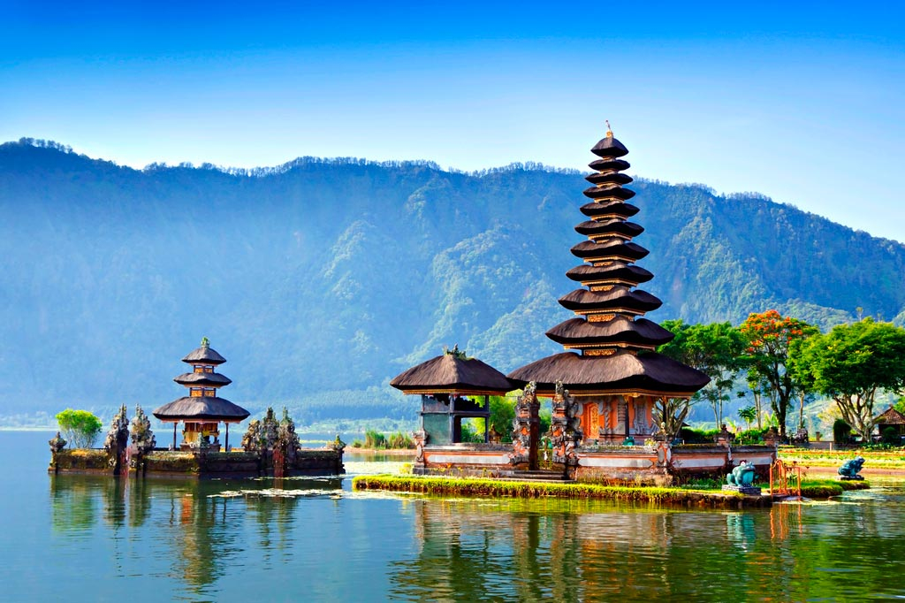

×

Indonesia
Климат
Экваториальный и субэкваториальный морской. В низинных районах температура большую часть года держится в пределах +26-27°С, в горных - несколько прохладнее. В южных и восточных районах жарче и климат имеет достаточно ярко выраженные сезоны - дождливый (сентябрь-май) и относительно сухой (май-октябрь). Солнечная погода сохраняется практически весь год, так как большая часть осадков выпадает в горных районах, преимущественно рано утром или ночью. Всего осадков выпадает более 3000 мм в год.
На острове Бали климат экваториальный муссонный, имеющий только 2 сезона - сухой (июнь-октябрь) и влажный (ноябрь-апрель), почти не различающихся по температуре - +23-27°С. Наибольшее количество осадков выпадает в январе-феврале.
Температура морской воды +26-28°С круглый год.
____